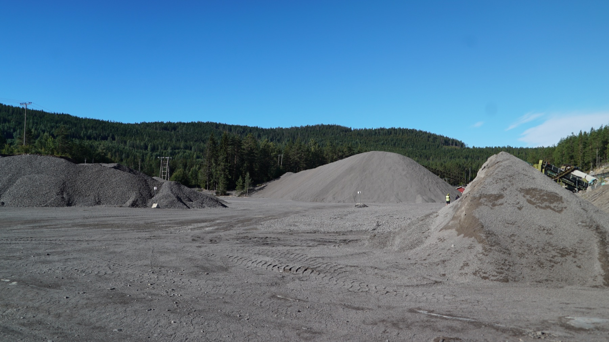
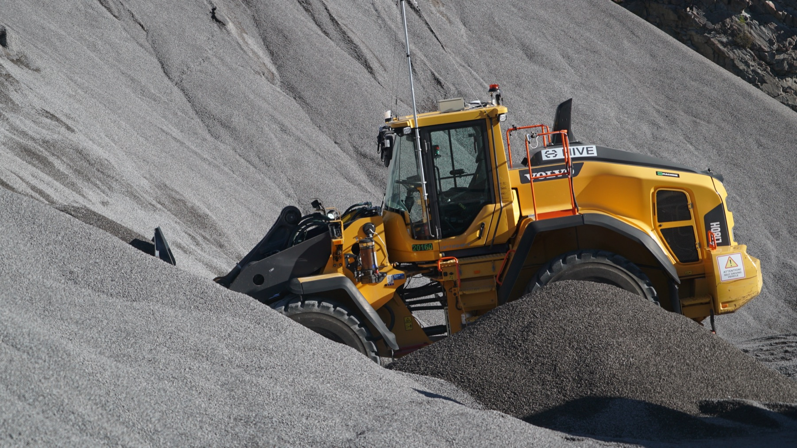
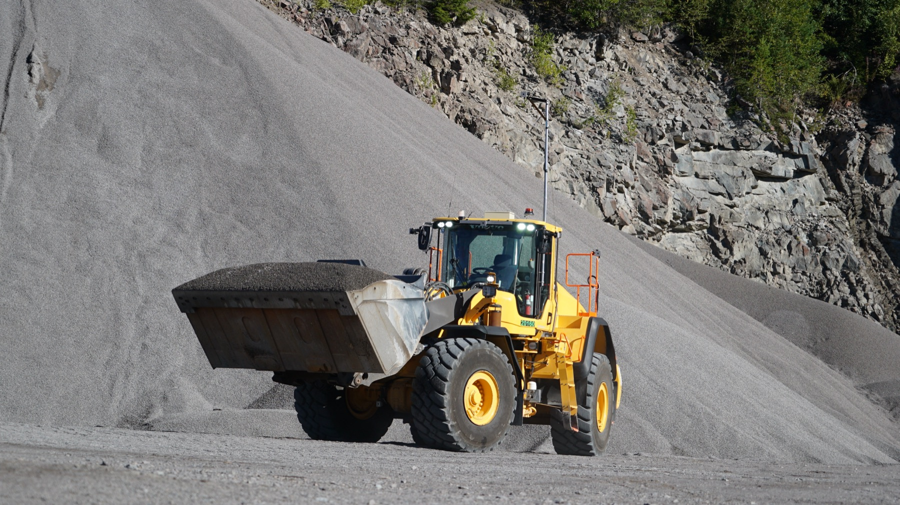
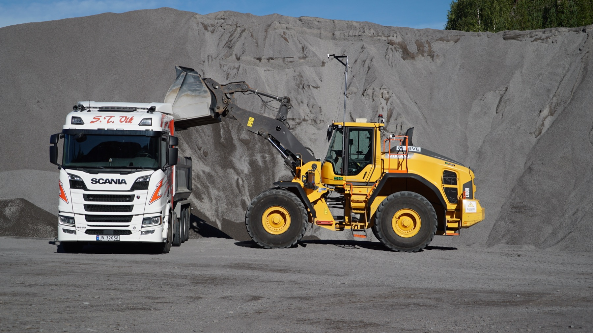
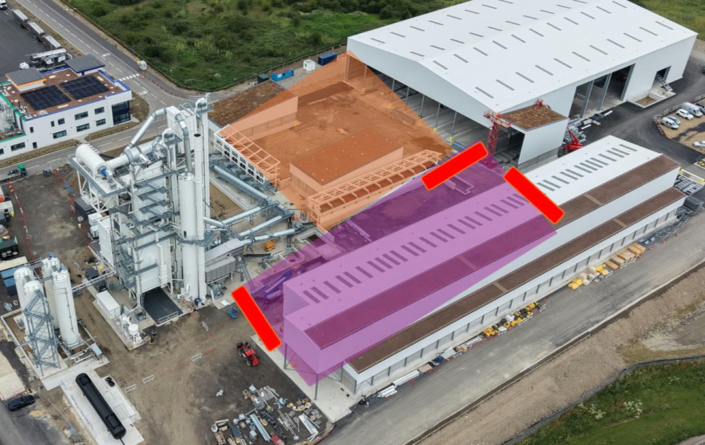
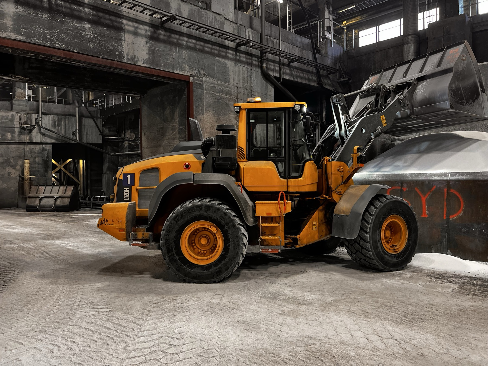

A wheel loader in a quarry, and the people around it.
How the operation runs today, what the customer measures us on, and where Hive stands. Written for engineering and product, and for whoever joins next.
Living document. Every number carries its source in brackets. Open items are marked in red. Customers appear as examples of how sites differ, not as a list of who we work with.
Why this document exists.
Engineering builds the machine and the infrastructure it runs on. Sales talks to the site every day. This is the handover between the two, kept alive, and the first thing to read when you join.
The problem we are paid to solve
A quarry, a recycling plant or an asphalt plant is a production unit. Material has to move every hour the plant runs. The wheel loader keeps the crusher fed, the stockpiles in order and the trucks loaded. When it stops, the plant stops.
Today one person sits in that cab all shift. The site manager calls that person and says what to do for the next two to four hours. There is no system in between. [Ronny, 11 Sep 2026]
What Hive does, in one sentence
We take charge of the machine in operation. A Volvo wheel loader with our kit fitted is run from our operations centre in Kristiansand under supervised autonomy, with a person in the loop who takes the site manager's call exactly as the cab operator did. The customer keeps their system.
How to read it
Chapters 2 to 5 describe the operation as it runs without us, following one real site through one shift. Chapters 6 and 7 describe where we plug in and what the operation costs. Chapters 8 and 9 turn that into criteria: what conditions we can work in, and what the customer measures us on. The rest is raw material for the backlog.
Twelve words you need before chapter 2
Who appears in this document
On the customer side: the site manager or production lead who owns the tonnage, the cab operator, the weighbridge operator, and the site's HSE lead. On our side: the remote operator in Kristiansand, the task coordinator who takes the site's calls, the delivery team that installs and commissions, and engineering. Where a named person is quoted, their role is given. Customer names appear only where a specific site taught us something.
One site, one shift.
Hadeland is a quarry north of Oslo where our first production machine runs. Follow it from blast to weighbridge and you have the pattern every other site is a variation of.

The material flow, in five steps
- Blast. The face is drilled and blasted on a schedule. Everything stops and everyone leaves the zone while it happens.
- Muck out. The blasted rock is loaded by excavator or wheel loader into haulers, or moved straight to the primary crusher.
- Crush and screen. Primary, then secondary and tertiary crushers reduce the rock. Screens sort it into fractions. Conveyors drop each fraction onto its own stockpile.
- Stockpile management. The loader keeps the piles clear of the conveyor drop, blends fractions when a product needs it, and moves material between piles.
- Load out. Customer trucks arrive, the weighbridge opens a ticket, the loader fills the truck, the truck weighs out.
The loader has three jobs in this chain: feed the crusher, keep the piles right, load the trucks. Which one dominates depends on the site, and that decides what "good" means for the machine.
The shift at Hadeland
The site runs from 06:30 to 17:00. Our machine is a Volvo L180H with a bucket of about 6 tonnes, driven from Kristiansand, roughly 370 km away, over public 5G. The lowest uplink measured on site is 42 Mbit/s, above our 40 Mbit/s floor, but the signal drops under the rock face on the upper bench. [connectivity baseline; research Jun 2026]
Hadeland is a self-loading site: customers fill their own trucks from the piles. So the machine is not replacing a paid operator. It does the work that otherwise waits: blending fractions to make a product, and clearing the piles under the crusher's conveyor drop so the crusher can keep running. The next task is moving blasted rock to a temporary stockpile. After that, loading customer trucks, once the bucket scale is integrated so the load can be weighed as it goes in. [site notes, Aug and Sep 2026]
A Norwegian four-axle truck takes 17 to 18 tonnes, three buckets. The site's operations lead set three acceptance criteria for truck loading: flow, the right tonnage, centred loads. Under remote operation the machine has measured 23 seconds from scoop to dump when blending, which the site judged inside their commercial window. [site notes, Aug 2026]



What "customer happy" means here
The crusher never waits for material. The piles do not bury the conveyor. Trucks leave inside the weighbridge window. Nobody walks into the machine's area unannounced. Every metric in chapter 9 is one of these four sentences turned into a number.
See it: two quarries on video.Hadeland under remote operation, and Sørli during the Veidekke and Telia test in June 2025.
Variation: mobile crushing. The crusher sets the pace and the loader is the only buffer.Pattern seen at NCC's mobile crushing campaigns in Sweden.
A crusher on tracks is set up in a quarry for a campaign of two to six months, then moved. An excavator digs the muckpile, the wheel loader feeds the crusher and takes the product away from the belts. There is only about 80 m3 of storage under the belts, so when the loader stops, the crusher stops minutes later. The loader is on the critical path far more than an average would suggest.
Volvo L220 with a 6 m3 bucket. Ten to twelve hour shifts, about 50 production hours a week, breaks when the operator decides. Haul distance 60 to 150 m. One to three oversize stones per bucket, which jam the crusher if they get through. The crusher moves 5 to 10 m sideways daily. A second shift is blocked by the noise permit, roughly 07:00 to 18:00, not by staffing. Crusher capacity is about 650 t/h on a single 0/150 product, 500 on 0/32, and 300 plus 150 plus 150 with three fractions; those are the crusher's numbers, not a requirement on the loader. [NCC site walk, 21 Aug 2026]
Variation: asphalt plant. Cold feed bins on a clock.Pattern from the Thurrock plant in the UK, as the customer described it in their own scope document.

An asphalt plant draws aggregate fractions from cold feed bins in a fixed recipe. The loader keeps each bin topped up from its bay. Miss a bin and the mix goes off spec or the plant stops. Distances are short, the pattern repeats, and the pace is set by the plant.
The customer's own description of the work, in two phases. First, inside a fenced zone with no foot traffic: move recycled asphalt (RAP) from the storage bays to the RAP feeders, a simple repeating task, while the site times how fast the bins are filled and records what the bucket carries. Then, in a larger zone that looks like normal operations: transport virgin aggregate to the virgin cold feeders, empty the reject chute, and adjust levels in all the bays. Those tasks start with the remote operator driving and move to autonomy as the system learns them. The customer will judge the second phase on the share of time the machine stays autonomous, the number of emergency stops and the reasons for them, and whether it completes business-critical tasks without a remote takeover. [Thurrock scope of operations, Sep 2026]
Two details from the same document that describe our operation better than we usually do ourselves. The site team does the daily inspection of the kit, cleaning the sensors and checking the mountings, and then presses "Hive mode on" at the cabinet in the cab, which is what gives Kristiansand access to the machine that day. And the light barriers stop the machine both if someone enters and if the machine itself tries to leave; when a task needs to cross a barrier, such as emptying the reject chute, the remote operator switches it off momentarily under a procedure.
For scale: the customer's KPI framework references plant demand of around 100 tonnes an hour and a diesel loader burning 160 to 180 litres over a 6 to 7 hour shift. [customer KPI framework, Jun 2026]
Variation: industrial plant. Fixed surroundings, a shift you can write down.Pattern from Yara's fertilizer plant at Herøya, our longest-running machine.

A Volvo L120H moving fertilizer inside a chemical plant. Pile to hopper, indoors, the same route all day. Safety is a light barrier around the area: the machine stops if the beam is broken. The site started on tele-remote and has since asked for more autonomy in the cycle.
The shift, as the plant specified it. Eight hours. Drive from parking to the bin area through mixed traffic once, in the morning. Then 200 cycles: drive to bin, fill about 4 tonnes, drive to the unloading area, wait until it is ready, unload left, middle or right. Each step about half a minute. The hopper empties at most 1.6 tonnes a minute, so the loader waits on the plant, not the other way round. Bucket change once a day, or up to ten times an hour when two products alternate. Three evenings a month a special product: 65 cycles in mixed traffic, press a button and wait for the silo. Waste runs seven times a day. Fuel once a day, ten minutes. [plant requirements specification, 2024]
The load-and-carry cycle here averages 2 min 30 s because of the route, and the site's gate for the next step is one week of stable remote operation with no loss of volume. Waiting is built into the plant: the belt stops often and the hopper fills. [site notes, Aug 2026]
Variation: recycling. Feeding a line, with people and forklifts close by.Pattern from a paper-recycling hall in Oslo.
The material is lighter, dirtier and less predictable than rock. The loader feeds a hopper or conveyor that must not run empty and moves bales and loose material between bays, mostly under a roof, with forklifts and people closer than in a quarry. Two smaller loaders (Volvo L90H) and two forklifts share the work. Reception runs three shifts, the paper line two, and machine utilisation on the paper line is about 40 percent, so the machine idles more than it works. Tyres wear fast on concrete and waste: 200,000 to 300,000 NOK a set. Seventy percent of deliveries arrive between 08:00 and 16:00, so the night shift is the window with the fewest people around. [site business case, 2025 and 2026]
Variation: mine. The task arrives as a polygon.Pattern from a copper mine in Utah that is building its own orchestration layer, and from a Norwegian marble quarry that already runs autonomous trucks.
Most sites give the machine instructions by voice: go and dig that part, move this to there. A mine that has already automated its haulers plans the whole operation in software and hands out work packages as polygons: dig here for three hours, then move there. Our system receives commands and shape files instead of a phone call. The machines are 100 tonne class loaders, three times the Hadeland machine, running 24/7 on a private 5G network with the operator station on site, so the latency questions we carry elsewhere fall away. The customer values consistency over speed: a slower but perfectly even cycle all day is worth more to them than a fast operator who takes breaks. [site visit and notes, Aug 2026]
Nearby in spirit: a Norwegian marble quarry moves about 2 Mt a year with nine autonomous Volvo FH trucks on a 5 km route, safety driver removed in 2023, over 1 Mt and 220,000 km driven. One Volvo L350 wheel loader is the only manned machine inside the autonomous zone. [research note Jun 2026] That loader is the shape of the opportunity.
Variation: ship loading, construction yards, snow.Three patterns where the loader is not on a repeating cycle.
Ship loading. A quay-side quarry loads 1,500 to 2,000 tonnes an hour into a vessel when a ship is in, and little in between. The site runs 20 hours a day with haulers between quarry and quay, so three haulers mean six or seven people. Bursts of very high throughput, then waiting. [Wergeland site visit Aug 2026]
Construction yard. On a civil works site the loader is a service machine: it carries a diesel tank to the other end, moves pipes, loads a hauler now and then. Eight hours of continuous scooping is not the pattern. [Grimsrud site visit Aug 2026]
Snow. A mountain pass closes for avalanche risk, 44 days in one season. A loader with a plough clears the road during the closure, run from a control room, with nobody on the pass. Same machine, same station, no production cycle at all. [Vikafjellet case]
The people around the machine.
Every task on a site passes through a handful of people. Two of them are ours. Know what each one cares about and most requirements explain themselves.

A day in the life: site manager at a quarry.Drafted from ten years of running sites. A typical day, not an observed one.
| Time | What happens | Channel |
|---|---|---|
| 06:30 | Walks the plant. Checks which piles are low, which conveyor drop is getting buried, what the day's truck orders look like. | Eyes, weighbridge order list |
| 07:00 | Tells the loader operator the plan for the morning: clear under the 0/4 drop, then blend 8/16 for the afternoon order. | Phone call or face to face |
| 09:30 | A truck arrives early for a product nobody expected. Calls the operator to switch. | Phone, sometimes WhatsApp |
| 11:00 | Crusher stops on a blockage. Loader is redirected to load trucks until it restarts. | Phone |
| 13:00 | Blast planned for tomorrow. Confirms with the shot firer where the loader must not be. | Meeting, paper plan |
| 15:00 | Checks tonnes over the weighbridge against the day's plan. Adjusts tomorrow. | Weighbridge system |
A day in the life: our remote operator.Built from the written start-up procedure at Herøya, the Thurrock scope, and an ergonomics observation at Sørli.
| Step | What happens | Source |
|---|---|---|
| On the machine, before start | Someone on site walks the daily check: position and cleanliness of every camera and lidar, the antenna, cables into the cabinet, cabinet locked. Then presses "Hive mode on" at the cabinet in the cab. Without that, Kristiansand has no access to the machine that day. | Herøya operating procedure; Thurrock scope |
| At the station | Authenticate into the room. Check power and connectivity. Power the station. Rotate the chair 90 degrees, adjust seat, pedals and backrest. Turn the key on the left armrest. | Herøya operating procedure |
| Before taking control | Verify every camera stream on the curved screen. Six at Herøya: front, left, right, back, lower back, under the bucket. Seven at Thurrock: three making a 160-degree front view, one each side, one back, one on the bucket. Verify the touchpad shows the equipment, remote control and autonomy managers. | same; Thurrock scope |
| Taking the machine | Select the machine; a blue light comes on at the machine so people on site can see it is under remote control. Choose remote mode or autonomy mode. Brake before selecting. In autonomy, pick a zone: the machine starts moving the moment the button is pressed. Abort is always one press away. | same |
| Emergency stop | Button on the right armrest. Machine brakes and stops at once. Red blinking light so every other station in the room sees it. Pull the button up, then Clear Error before the machine returns to operational mode. | same |
| During the shift | A 194 cm operator reported shoulder stiffness after about three hours, missing forearm support, and glare from a window behind the screen. The e-stop was tested at 10 km/h and worked. | ergonomics observation, Sørli, Jun 2025 |
| Shift end | Machine to its parking position. The operations centre logs cycles completed, production delivered, interventions, anomalies, uptime, downtime. | pilot SOW template |
How work gets assigned today.
Before Hive. One truck load, from the moment it turns in to the moment it leaves, drawn as a service blueprint and then told as a story.
- A truck turns in and stops on the weighbridge. The driver says which product and how much.
- The weighbridge operator opens a ticket, weighs the truck in, and radios or phones the loader operator: 0/32, pile three, about three buckets.
- The loader operator hears the call in the cab, finishes the bucket in hand, and says yes.
- The truck drives to the pile. The loader drives over and positions square to the truck's side.
- Three cycles: dig, lift, drive the few metres, dump centred on the bed, back off. The operator judges the fill by eye unless the loader has a scale.
- The operator signals the driver. The truck goes back over the weighbridge, weighs out, the ticket closes, the driver leaves.
- The loader goes back to whatever it was doing before the call, until the phone rings again.
- Every two to four hours the site manager calls and sets the next block of work. If the crusher jams or a truck arrives unannounced, the call comes sooner.
Three things to notice. The loader operator is interrupted constantly, and the interruptions arrive by voice. Nothing about the task is recorded except the weighbridge ticket. And the site manager is the scheduler, in their head, all day.
Four ways a task can arrive
| Pattern | How the loader learns what to do | How far ahead | Written anywhere | Seen at |
|---|---|---|---|---|
| Voice | Site manager or weighbridge calls the operator. Radio, phone, sometimes WhatsApp. | Two to four hours, interrupted per truck | Only the weighbridge ticket | Most quarries, including Hadeland |
| Follow the customer | The customer drives in, the loader follows them to the right pile and loads. A physical note if anything. | Per truck | No work-order system | A gravel yard we surveyed in March 2026 |
| Fixed programme | The plant's shift plan says what runs when. The operator follows it; a button and a silo signal handle the exceptions. | Whole shift | Yes, in the plant's requirements | Herøya |
| Orchestration layer | The customer's planning software sends commands and polygons into our system. | Hours, as work packages | Yes, machine readable | The Utah mine |
Variant: feeding the crusher.Same lanes, different rhythm. The crusher sets the pace and never calls.
In mobile crushing the loader is the only thing between the excavator and the crusher, with 80 m3 of buffer. The operator watches the belt, not a phone. Breakfast at 09:00 and lunch at 13:00 stop the crusher too, because nobody feeds it. [NCC site walk]
Variant: blast day.Everything stops. Where the machine is parked, who says when it can move again.
One bucket, six phases.
Everything the customer pays for reduces to this: how many times an hour the bucket goes round, how full it is, and how many hours a day the machine runs.
The arithmetic. A 23 second cycle with a 6 tonne bucket is 156 buckets an hour, about 940 tonnes, if the machine never waits. Nobody runs like that. Waiting for trucks, for the crusher, for a call, and for breaks takes the real figure to a fraction of it. That is why availability and utilisation matter more than raw cycle time, and why the numbers below are conditions, not scores.
| Measurement | Seconds | Conditions, and what the number means | Source |
|---|---|---|---|
| Hadeland, remote, scoop to dump | 23 | L180H blending at a pile. The site judged the loads inside their commercial window. Roughly what a good cab operator does on the same task. | use-case deck; customer call 2 Sep 2026 |
| Hadeland, cab operator, hardest possible | 24.5 | Standing start, two piles, simulated truck height. Not filmed. Shows the ceiling on that task is about the same for both. | internal measurement 28 Aug 2026 |
| Kristiansand test machine, remote, truck loading | 72 | Bucket over truck to bucket over truck, timed from video by a customer. Truck loading, with an unstable brake pedal and no centring aid. The gap to 23 is the gaps list in chapter 6, not a law of remote operation. | customer measurement, Aug 2026 |
| Utah mine, cab operator, 100 tonne loader | ~40 | Their own video timed in our meeting; their claim was 25 to 30. Four passes per hauler. Bigger machine, slower everything. | internal meeting 2 Sep 2026, eyeball |
| Herøya, load and carry | 150 | 2 min 30 s average. A long route indoors and a hopper that takes 1.6 t/min. The plant, not the loader, sets this. | site notes |
| Gravel yard, per customer served | ~320 | About 5 min following the customer's truck plus 20 s digging. Almost all travel. | site visit Mar 2026 |
| Manufacturer reference, cab operator, short cycle | 27 to 33 | Competent operator, basic cycle. The textbook number. | Caterpillar productivity guide |
| Academic, Volvo L180 teleoperated over WiFi | +70 % | At 150 to 250 ms camera latency the cycle was 70 percent longer and productivity 42 percent lower than in the cab. Bucket fill stayed at 97 percent of manual. One finding, three numbers. | Dadhich 2018 |
Hours, not just seconds.How differently sites use the same machine, and why availability is where the money is.
| Pattern | Machine | Hours | Throughput reference | Example |
|---|---|---|---|---|
| Quarry, self-loading | L180H, ~6 t bucket | 06:30 to 17:00 | 17 to 18 t per truck; group peak 600 to 700 loadings a day | Hadeland |
| Industrial plant | L120H, ~4 t | 8 h shift | 200 cycles per shift; hopper 1.6 t/min | Herøya |
| Mobile crushing | L220, 6 m3 | 10 to 12 h, ~50 h a week, one shift | Crusher 650 t/h single product | Sweden |
| Asphalt plant | L150H | Plant hours, seasonal | Plant demand ~100+ t/h | Thurrock |
| Mine | 2 × 100 t class | 24/7, 8,736 h a year | 45 t/h baseline discussed | Utah |
| Ship loading | L350 | 20 h a day when a ship is in | Site 1,500 to 2,000 t/h | Sløvåg |
| Recycling hall | 2 × L90H + 2 forklifts | 3-shift reception, 2-shift paper line | Utilisation ~40 % | Oslo |
| Readymix plant | L120 class | 1 to 3 h a day | Batches on demand | UK concrete plants |
A cab operator works one shift with breaks, and the machine stands still when they do. A remote operated machine can be handed between operators and in principle runs the plant's hours, not the operator's. That is the productivity argument. It only holds if the machine is actually available, which is why availability is the first metric in chapter 9.
Duty cycle decides the business case. A loader that runs 8,736 hours a year and a loader that runs 1 to 3 hours a day are the same machine and opposite economics. Below roughly 0.4 operator FTE per shift, paying for availability costs more than the wage it replaces. [availability pricing note, Aug 2026]
Where Hive plugs in.
The same blueprint as chapter 4. Boxes with a red edge change. Everything else stays as the customer has it today, and that is the point.
- A truck turns in and the weighbridge opens a ticket, exactly as before.
- The weighbridge operator calls the same number. Our task coordinator answers, in the site's language, and notes the task.
- The remote operator in Kristiansand gets the task, finishes the bucket in hand, and drives the machine to the pile on camera.
- Three cycles, tele-remote today, autonomous where the site has enabled it. A fixed distance reference to the truck side will do the centring the eye cannot.
- The operator signals the driver with the light and horn. The truck weighs out. The bucket weights will one day arrive with the ticket.
- The coordinator logs completion. That log is the shift report, the monthly report and the root cause file, all at once.
- If anyone enters the area, the machine stops. If the link drops, it stops. Anyone on site can stop it with the wireless e-stop. Restart is a person confirming on camera that the area is clear.
What does not change is the offer. The site does not learn a new system. They call the number they always called, a person answers who understands the site, and the machine does it. That person is also what de-risks the operation for us while the autonomy matures. Two models sit on this blueprint: today the task arrives by voice and a coordinator turns it into machine work; in the orchestration model the customer's software sends structured commands and polygons straight into ours. The second is where we want every site to end up. The first is what runs now.

The kit, the machine, the layers
The kit is cameras, lidars, a control cabinet and radio, fitted to the customer's own Volvo in two to three days without destroying anything, so the machine can still be driven from the cab at any time. During a proof period we bring our own machine instead, so the site does not tie up one of theirs. A heartbeat runs between station and machine every 250 ms; if it is not returned, the machine stops. Emergency stops sit in four places: on the kit, in the cab, at the remote station, and in the site's own control room where they have one. [Thurrock scope; commercial model memo]
Inside, the platform is five layers: Safety System at the bottom, then Machine Control, Operator Platform, Autonomy, and Physical AI on top, with Connectivity and Data Logging as rails along the side. Each layer depends on the one beneath it; nothing runs unless the safety layer is present and healthy. Tele-remote is the first three layers on their own. A closed CAN bus, as on some other brands, is a layer-two obstacle and blocks everything above it. [platform definition, Aug 2026]
What still costs cycle time under remote operation.Five gaps found at Hadeland in summer 2026. None of them stop the machine loading. They stop it loading fast.
- Brake pedal fidelity. Three pedals, two brake. One is so hard the operator avoids it, the other behaves differently from one attempt to the next. The operator compensates by driving slowly throughout. The site's operations lead suspects the torque converter cuts drive on brake instead of keeping it, which no experienced operator accepts. Cycle times taken with unstable brake behaviour measure the defect, not the capability.
- Depth perception. The operator cannot judge lateral distance to the truck from camera feeds, so loads end up off-centre. The operator brakes to a full stop before lifting, takes the bump, loses a couple of hundred kilos, drives over the spill next pass.
- Fixed geometry beats vision. Front axle to truck is the same distance on every standard L180, and nearly all trucks are about 2.5 m wide. A fixed distance reference to the truck side solves centring without solving depth perception. An open perception problem becomes a bounded sensor-and-UI problem.
- No tilt indication in the operator view. Matters for centring and for tipping safety. Articulated haulers already carry the gyro.
- Uncommanded e-stops break flow, and the log lies. Every stop restarts the cycle. The log reported one e-stop as a station button press that never happened, so root-causing cannot rely on it until fixed. Network drops under the rock face look the same in the field.
[remote truck loading application gaps, Aug 2026]
The autonomy path, honestly.Rule-based autonomy runs zones at Herøya. The learning-based policy works blasted rock on video and is not production-ready.
Engineering's own words in September 2026 about the learning-based policy: "very far from anything production-ready. Fine for a demo video, I would not trust it in production." Time to production-ready: "maybe a month, probably not, maybe three, maybe six, maybe a year." It will hurt throughput before it helps. That is why no customer criterion is set on its cycle time. [internal meeting 2 Sep 2026]
The path: tele-remote first, the system learns from every intervention, the autonomy share rises, one operator watches more machines. The next hardware release (new cabinet, harness, camera positions, new camera type) is the baseline for scaling. [platform roadmap note, Aug 2026]
What the operation costs, and where our value sits.
We price as a share of the operator's wage. On most sites the wage is the smallest line on the sheet. Knowing the rest of the sheet is what makes the metrics in chapter 9 make sense.
Why the labour share is 2 percent at one site and 45 at another
Three things move it. What you divide by: one machine's hourly cost, one machine's total cost of ownership, or the whole operation including the crusher and the moves. How many shifts: one operator on days, or four to seven heads to run 24/7. Where you are: a mine operator in Mongolia at 15 dollars an hour, a Norwegian construction operator at 550 to 600 NOK. The 2 to 3 percent figure is one customer describing their own mobile crushing campaign against everything in it. A 38 percent figure we used early in 2026 came from an external source describing only the machine's own running cost. Both are right in their denominator. Neither is confirmed in writing by a customer. [cost elements note, Sep 2026]
Where the value sits, according to the people who pay
- Fuel and wear, not the wage. After the mobile crushing site walk the conclusion inside Hive was: "when labour is 2 to 3 percent of cost and diesel 20 to 25, the gain sits in consumption and wear, not in removing an operator. Measure diesel per tonne from day one, not only tonnes and uptime." One quay-side customer put it more bluntly: "80 percent of the wage cost, that is not a real saving." [Ronny Aug 2026; Wergeland Aug 2026]
- The levers we can actually pull. Engine off when standing. Drive slower and continuously instead of "full throttle, one bucket, race off", which a customer asked for unprompted because it saves fuel. No driving to the canteen. No cabin heating or air conditioning with nobody inside. No wheel spin entering heavy material. None of these has a measured percentage on our machines yet. [NCC; Veidekke; Ronny Sep 2026]
- Smaller machines, more of them, more hours. Customers want to drop a machine size and run more continuously, or run three haulers instead of four. Compare on the shift, where there is "30 to 50 percent downtime to play with", not on the cycle, where remote operation loses. [NCC; CRH; Volvo workshop Aug 2026]
- Consistency over speed. A mine operator said they "could live with some penalty to human labour" for a cycle that is the same all day. A UK fleet lead wants proof the machine is driven inside its design parameters so components last. [Mariana; CEMEX UK]
- Where the wage is large, it is because of shifts. Glass plants, mines and quay-side operations run round the clock. There the wage argument is the right one.
What this asks of engineering
Log fuel per hour and hour-meter from CAN, which already exist, and turn them into fuel per tonne and idle share per shift. Log the hour meter separately from working time, because service contracts bill on it. Report consistency (cycle time variance across a shift) alongside averages. Cost per tonne is the customer's summary number; it needs tonnes, fuel, hours and interventions from the same log.
What we operate inside.
The conditions the system is built for, stated so they can be tested. Borrowed from the ODD idea in road autonomy, used here as a working format, not a compliance claim.
| Dimension | Supported today | Source |
|---|---|---|
| Machine | Volvo wheel loaders, 2018 and later, with three control interfaces: CDC steering with electric joystick on the left armrest, electric lift and tilt joystick (no hydraulic pilot), and OptiShift with the RBB brake valve. Attachment link advance optional for CAN feedback. H-series versus K-series (2026 platform) is a separate check. The chassis number does not decide it, the three interfaces do. The size range is not agreed: four ranges circulate internally (L60 to L350, L60 to L220, L110 to L250, L110 to L260). One 100 tonne class machine of another brand is a deliberate exception with its own integration. | machine integration criteria, Aug 2026 |
| Kit | Cameras, lidars, ultrasonic sensors, control cabinet, radio. One configuration: 2 lidars (roof and tool tip), 6 wide-angle cameras, 6 ultrasonic. Another: 7 cameras, three of them making a 160-degree front view. Radar in the platform definition. Camera type changes in the next release. | plant technical specification; Thurrock scope; platform definition |
| Site types | Quarry and aggregates, industrial plant with fixed surroundings, recycling, asphalt plant, mine. Snow clearing on a closed road has been run. | chapter 2 |
| Task types | Blending, clearing under the conveyor drop, pile to hopper, moving blasted rock to stockpile, zone-to-zone autonomous driving, feeding cold feed bins. Truck load-out pending bucket scale integration. Never loaded haulers under autonomy. | chapters 2 and 6 |
| People and vehicles | Phase one is a physically segregated working surface, closed to entry without notification, with light barriers at the entrances where the site has them. While a human supervises, perception is a supplementary system with no safety rating; when supervision is reduced, detection moves to safety-rated sensors at PL d via ISO 3691-4. | HSE response Sep 2026 |
| Network | Floor 40 Mbit/s sustained uplink; standard site requirement 50 Mbit/s symmetric, latency under 100 ms, jitter under 30 ms, packet loss under 0.5 percent. Volvo's own criteria: about 30 ms one way, hard ceiling near 50. Heartbeat every 250 ms, machine stops if it is not returned. Public 5G at most sites, private 5G at a few. | connectivity baselines; pilot template; Volvo criteria; Thurrock scope |
| Regulatory | Machinery Directive 2006/42/EC until 20 January 2027, then Regulation 2023/1230. The remote operator is the driver in law. Heartbeat stop is required. CE marking is per machine; the operational risk analysis is per site, with a notified body involved in approving procedures. | research Sep 2026; HSE response |
| Weather, light, dust | to fill | engineering |
| Slope and surface | to fill | engineering |
What happens when it breaks.Minimal risk condition per failure type, as we have answered it to a customer's HSE lead.
| Failure | Machine does | Who acts | Resume | Status |
|---|---|---|---|---|
| Total loss of communication | Stops and goes to safe state: full brake, park brake engaged, engine off. | Remote operator sees the loss; site hears the machine stop. | Link restored, operator re-takes control. | Answered in writing |
| Heartbeat not returned within 250 ms | Stops. | Remote operator | to fill: reset path | In customer scope documents |
| Person approaches or light barrier broken | Does not move. Opening the door is in the e-stop circuit. Two seconds of audible warning before any engine start. | Anyone on site can stop with the wireless e-stop that travels with the machine, or a fixed one near the crusher or in the control room. | Remote operator confirms on camera that the person has moved clear. No mechanical lockout exists. This is the weakest link today. | Answered in writing |
| Machine leaves the trial area | Stops immediately (light barrier). | Remote operator | Barrier switched off momentarily under procedure when a task requires crossing. | Thurrock scope |
| Emergency stop pressed | Brakes and stops at once. Red blinking light at every station in the room. | Operator pulls the button up, presses Clear Error. | Machine returns to operational mode. Root cause analysis for every e-stop loop trigger, shared with the customer. | Operating procedure |
| False positive on public 5G | E-stop loop triggers. | Engineering filters. | Stated learning; fix expected in the next release. | Open |
| Sensor fault | to fill | to fill | to fill | Engineering to confirm |
| Operator unavailable | to fill | to fill | to fill | Operations to confirm |
Safety functions are designed to PL e per ISO 13849, emergency stops to ISO 13850, category 3 architecture on cabling with diagnostic coverage on the safety relay. The AI makes no safety decisions; it chooses the path and where to scoop. Stopping for a person or an object is the separate safety layer. When a customer asked how new AI models and skills are verified, we left the answer blank because there was no answer we could stand behind. [HSE response, Sep 2026]
Full taxonomy, per site.Scenery, environment, dynamic elements, machine state. One column per site. Becomes the pre-sales site survey.
What the customer measures us on.
Six numbers decide whether a site stays a customer. Everything else is instrumentation that helps us hit those six.
| Metric | Definition we use | Who cares | What customers have asked for | Logged today | Reference |
|---|---|---|---|---|---|
| Availability | Available hours divided by scheduled operating hours in the period. Planned maintenance agreed with the site, customer machine service, fuel, weather outside limits, site network and power, and downstream stoppages excluded from both numerator and denominator. | Site manager, owner | Between 90 and 98 percent in signed and drafted agreements, measured over windows from two weeks to a quarter. One site wrote 100 percent into a draft and settled on a 3 to 5 percent allowance. Verbally we say the remote operator takes over within five seconds. | Station uptime and stop signals are logged. No availability figure is computed. Internal estimate today about 80 percent. | customer agreements; internal meeting Sep 2026 |
| Tonnes per hour | Tonnes moved per hour worked, by task, against the site's manual baseline established before we start. | Site manager | At or above the manual baseline. Baselines discussed range from 45 t/h at a quarry to plant demand at an asphalt plant, measured over 20 ship calls at a quay. | Load weight in kg is on the CAN list where the machine provides it. Bucket scale not yet integrated at Hadeland. | customer agreements; logging specification |
| Cycle time, remote vs cab | Seconds from bucket entering the pile to bucket empty at the dump, averaged per task, reported next to the site's manual figure. | Site manager, engineering | Within 10 percent of their manual capacity (mine, conditional on brake feel). Autonomous transport not slower than manual (industrial plant). | Not computed. Totals measured by hand from video. | internal meeting Sep 2026; plant requirements specification |
| Interventions per hour | Times per operating hour a human took manual control or stopped the machine, for safety or because the system handed back, counted with the reason. | Engineering, HSE, mine customers | Number of emergency stops and the reasons, in a monthly report. Share of time in autonomy. One plant asked for at least 1:1 automatic to manual over two hours. | Stop and mode signals logged. Not aggregated. One operator pressed e-stop 30 times in one day on site in September. | Thurrock scope; plant requirements; internal meeting |
| Operators per machine | Remote operators on shift divided by machines in production. | Hive, owner | Sites have written four to six machines per operator as the scaling goal. One customer counted four supervisor FTE in their own model and priced us above manual. | Known from rostering. Open whether 1:2-3 is in production or a design target. | customer agreement; customer cost model |
| Connection drops | Count and duration of link losses that stopped the machine, per operating hour. Packet loss and jitter per link per shift. | Engineering, site manager | Latency under 100 ms, jitter under 30 ms, loss under 0.5 percent, tested and signed off before live operation. | Station-to-machine latency and camera latency are logged per session. No published figure. | pilot template; logging specification |
An example of how a customer judges a trial. The Thurrock scope says the second phase passes on three things: the percentage of time the machine stays autonomous, the number of emergency stops and the reasons for them, and whether it completes business-critical tasks without remote takeover. Three of our six metrics, in the customer's words. [Thurrock scope, Sep 2026]
The 70 percent rule. Engineering has heard that below 70 percent uptime we stop selling and fix. No customer agreement contains that figure. It is an internal product rule, and the right one to keep internal, since every threshold customers have set sits between 90 and 98.
How the customer wants it delivered. Production continuing at the current level is the requirement; reporting back is secondary. Nobody has asked for a live dashboard. What has been asked for: a shift-end log, a monthly report with intervention rate and supervision ratio and a quarterly review, monthly access to black box data, and a ten-sheet shift diary workbook with day and night rows. Build the data so all four can be produced from the same log. Do not build a dashboard first. [Ronny Sep 2026; customer requests 2026]
Full catalogue for engineering.Everything worth instrumenting, with definitions that match what customers and the industry already use.
| Metric | Definition | Why | Reference |
|---|---|---|---|
| Utilisation | Active work time divided by available time. | Separates "ready" from "working". Idle waiting for a task is a coordination problem, not a machine problem. A customer's example: 7 of 10 hours is 70 percent. | customer KPI framework |
| Queue and wait time | Loader waiting for tasks or trucks; trucks or plant waiting for the loader. | Surfaces scheduling and path planning issues. | customer KPI framework |
| Plant feed continuity | Minutes or share of run time the plant stopped for lack of feed. Minimum hopper level observed. | The asphalt plant and crusher version of "production continues". | customer KPI framework; hold-up clause |
| Fuel per tonne, idle share | Litres per tonne moved, by task. Share of engine hours with no movement. | Diesel is 20 to 25 percent of cost, labour 2 to 3. Fuel l/h and hour meter are already on the CAN list. | chapter 7; logging specification |
| MTBF | Operating hours divided by failures that stopped work, hardware and software counted separately. | Drives maintenance planning and the availability forecast. | standard reliability metric |
| Bucket fill factor | Actual payload divided by rated bucket capacity. | The academic teleoperation study measured 97 percent of manual. A mine customer wants it, but whether they mean our bucket or their hauler's load is not yet agreed. | Caterpillar: 60 to 95 percent by blast quality |
| Passes per truck | Buckets needed to fill one truck. | Four passes per hauler on the mine customer's video. Follows fill factor mathematically. | internal meeting Sep 2026 |
| Load centring | Lateral offset of the dumped load on the bed. | The site operator's main objection at Hadeland. Solvable with a fixed distance reference. | application gaps note |
| Cycle time variance | Spread of cycle times across a shift. | Consistency is what the mine customer said they would pay for. Averages hide it. | chapter 7 |
| Glass-to-glass latency | Camera capture to operator screen, ms. | What the operator feels. Research puts comfortable teleoperation under about 170 ms and marked degradation above 300 ms. Camera latency is already logged per session. | teleoperation studies 2025; logging specification |
| Motion-to-motion latency | Joystick input to machine response, ms. | Different number, different fix. Never report "latency" without saying which. Station-to-machine latency is logged; whether it covers actuation is to confirm. | arXiv 2511.22467; logging specification |
| Time to resume after stop | Seconds from a stop to the machine working again. | A stop that costs ten minutes each time is what the site manager raises first. Clear Error path exists; duration is not logged. | own definition |
| Autonomy share | Time in autonomous mode divided by time under Hive control, per task. | The number customers judge trials on, and the ratio the operator-per-machine number depends on. | Thurrock scope; plant requirements specification |
| ODD coverage | Share of the site's actual conditions inside chapter 8. | Tells sales what not to promise. | ISO 34503 idea, adapted |
| OEE | Availability × performance × quality. | One number for the owner. Mobile equipment scores structurally lower than factories. | OEE mining studies |
What customers have said, and what we think it means.
Observations first, solutions second, tests third. This is the entrance to the backlog, not the backlog. Engineering's question list is added here as it arrives.
- Keep voice as the primary channel. Log the task on our side, not the customer's.
- Test: does any site manager want to type? Ask three.
- Bucket scale into telemetry; payload per pass to the operator and to the ticket.
- Fixed distance reference to the truck side for centring.
- Test: ticket weight versus summed bucket weights on 50 trucks.
- Brake pedal fidelity in the next release. Check torque converter behaviour on brake.
- An overview camera angle of the loading spot, which the station lacks today.
- Test: repeat the truck-loading measurement after the fix.
- A speed profile tuned for fuel and wear, not for cycle time.
- Fuel per tonne as a first-class metric from day one.
- Test: fuel per tonne at two speed profiles on the same task.
- Autonomous pile-to-hopper cycle with remote supervision.
- Test: cycle time and fill factor against the tele-remote baseline over two weeks; one week of no volume loss.
- A task interface that accepts a polygon and a material target.
- Question for engineering: what in the infrastructure being built now would make this hard later?
- Log and report engine load, brake events and speed against manufacturer envelopes.
- Consistency reporting: cycle time and speed variance per shift.
- Goes into every site's risk analysis as its own item.
- Candidate: a physical lockout or a two-person confirmation before restart.
- Plant PLC integration as primary, vision detection as fallback.
- Hopper level variance and feed-related plant downtime as metrics.
- Station ergonomics for long shifts, before one operator watches three machines.
- Mixed traffic with untrained people is out of phase one everywhere. Pile stability is a perception question for autonomy later.
Not in scope.
Said out loud so it does not creep in.
- Machines other than Volvo wheel loaders with the three control interfaces in chapter 8. The one 100 tonne class exception has its own track. Haulers, dozers and excavators are separate tracks.
- A customer criterion on the learning-based policy's cycle time. Too unknown.
- A customer-facing live dashboard. Data first, dashboard when a customer asks and pays.
- Replacing the site's weighbridge, dispatch or ERP systems. We plug in beside them.
- Mixed traffic with untrained people inside the working area. Phase one is physically segregated everywhere.
- Customer-specific orchestration beyond the one mine until the shared system is stable.
- The safety case itself. Referenced, not reproduced here.
Glossary.
- Muckpile
- The heap of blasted rock at the face before it is moved. Norwegian: røys, salve.
- Stockpile
- A heap of one product fraction, usually under a conveyor drop. Norwegian: haug, lager.
- Fraction
- A size class of crushed rock, written as smallest/largest in mm: 0/32, 8/16, 0/150.
- Crusher feed
- Keeping the primary crusher's hopper supplied. The task that never calls and never waits.
- Load-out, HGV loading
- Filling a customer truck from a stockpile against a weighbridge ticket. Norwegian: utlasting. UK: HGV, heavy goods vehicle.
- Truck, hauler, dumper
- A truck is a customer's road vehicle. A hauler or dumper is the site's own off-road machine carrying 30 to 90 tonnes.
- Load and carry
- A cycle with a long travel leg: the loader carries the bucket to a hopper some distance away.
- Weighbridge ticket
- The record of product, weight in, weight out. The only written trace of a task on most sites. Norwegian: vektseddel.
- Self-loading site
- A yard where customers fill their own trucks. No paid loader operator to replace.
- Cold feed bins
- The hoppers at an asphalt plant that hold each aggregate fraction for the mix. RAP: recycled asphalt.
- Hold-up
- A customer's term: production time lost because our machine could not keep up.
- Cycle time
- Seconds for one bucket: spot, fill, lift, travel, dump, return.
- Bucket fill factor
- Payload divided by rated bucket capacity. A 6 m3 bucket carries about 10 tonnes of loose rock at a working fill, at 1.6 to 1.8 tonnes per cubic metre.
- Pass
- One bucket into a truck. Passes per truck is what a mine customer calls "pass match".
- Glass-to-glass
- Camera to operator screen latency.
- Motion-to-motion
- Joystick to machine response latency.
- Heartbeat
- A signal exchanged between station and machine every 250 ms. If it is not returned, the machine stops.
- Geofence
- The boundary the machine will not cross, and inside which people are not expected. A light barrier is the physical version at an entrance.
- Zone
- A pre-mapped area the machine can drive to autonomously when the operator presses its button.
- Remote operator
- Hive staff in Kristiansand driving or supervising the machine.
- Task coordinator
- Hive staff who takes the site's call and turns it into work for the machine.
- HOS
- Hive Operating Station, the operations centre and the physical station. Internal term only. Externally: "operations centre in Kristiansand".
- Tele-remote
- A person drives the machine from the station, every movement theirs.
- Supervised autonomy
- The machine runs the cycle, a person watches and can take over. Our product category. Not "remote control".
- VLA
- Vision-language-action policy, the learning-based autonomy layer. Works blasted rock on video, not production-ready.
- Retrofit
- Fitting our kit to the customer's own machine. Two to three days, non-destructive.
- OptiShift, CDC, RBB
- The three Volvo options that make a loader integrable: OptiShift transmission with the RBB brake valve, Comfort Drive Control steering, and electric lift and tilt.
- ODD
- Operational design domain. The conditions the system is built to work in. Chapter 8.
- PL d, PL e
- Performance levels for safety functions under ISO 13849. E-stops and safe state at PL e; person detection at PL d when supervision is reduced.
- Availability, utilisation
- Availability: share of scheduled hours the machine was ready. Utilisation: share of available hours it was moving material.
Change log.
- 0.3 · 11 Sep 2026
- Restructured after a first-time-reader review scored 0.2 at 6 of 10. Process first, criteria after. Twelve words up front. One site told end to end before the variations. Sentence walk-throughs under both blueprints. New chapter on cost from a sweep of customer conversations. Contract inventory, pipeline figures and document names removed; customers kept only as examples. Thurrock scope of operations folded in. Names replaced by roles.
- 0.2 · 11 Sep 2026
- Filled from the material inventory: contract clauses, plant shift specification and start-up procedure, mobile crushing site walk and HSE response, mine KPI preparation, remote loading gaps, platform layers, what is logged today. Hadeland photo series and blasted-rock video added.
- 0.1 · 11 Sep 2026
- First structure after the requirements call with engineering's new wheel loader lead. Written as base case for the project meeting the following week.